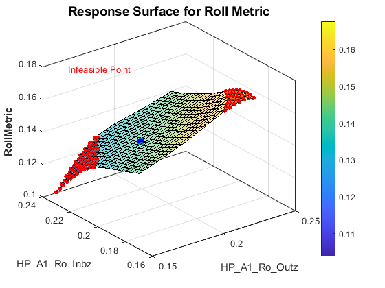

Explore Design Space of Suspension Using an App
Contents
Overview
This example shows how a MATLAB App can be used to explore the design space using both the surrogate AI model and the multibody model.
(return to Optimizing Vehicle Design Using AI and Simscape Overview)
Open Suspension Design Space Exploration App
A MATLAB App has been created using App Designer. Sliders allow the user to adjust the values of certain parameters. These are the parameters deemed most influential in the design. The tabs let you select which model to use for design space exploration, the surrogate AI model or the multibody model.
When the AI Surrogate tab is selected, a response surface is plotted. Two of the parameters are swept over the design space while the other parameters are held at user-selected fixed values. The AI surrogate model provides a prediction of the performance metrics. The selected performance metric (roll or ride) over this 2D portion of the design space is plotted as a surface. The exact point from the values in the sliders.
Adjust Sliders for Selected Parameters
The dot on the surface represents the value of the performance metric for the parameter values set by the sliders. If the sliders are adjusted for the selected parameter, the point shown on the reponse surface is adjusted.
Selecting Performance Metrics
The drop down menu below the plot selects which performance metric will be plotted as a response surface. Selecting "Roll" will show how the roll performance metric varies with the two parameters selected for the sweep.
Selecting Design Parameter for the Sweep
The radio buttons in the X and Y vertical boxes select which parameters will be swept for the response surface. Selecting new parameters will create a new surface. If the same parameters are chosen for x and y, the surface will not be updated.
Testing with the Multibody Model
Switching to the Multibody tab shows a new pair of plots and a "Test Multibody Model" button. Pressing that button will test the full multibody model with the parameter values specified by the sliders plus the default values for all other design parameters. The plots show the simulation results used to calculate the roll and ride metrics.

Plotting Response Surfaces
The response surfaces shown in the app can generated using MATLAB code. The response surfaces below shows how the roll metric (which affects stability) and ride metric (which affects comfort) varies as we vary the anti-roll bar inboard and outboard longitudinal positions on the rear axle. This affects the stiffness of the anti-roll bar by increasing or decreasing the lever arm.
The slope of the two surfaces show that these two performance metrics conflict with each other. Adjusting the locations of these hardpoints will improve one metric while harming the other. The surfaces show how sensitive each metric is to these parameters.
Plotting Response Surfaces: Infeasible Points
The track rod hardpoints have a constraint associated with them. Their relative vertical position cannot be too far from one another or the amount of bump steer will be too large. This is reflected in the response surface. The infeasible portion is marked with small dots.
The AI surrogate model was not trained on these points. We can see that the slope of the response surface steepens greatly here. This is due to the extrapolation from AI surrogate model. We cannot trust the AI surrogate model in these regions.
